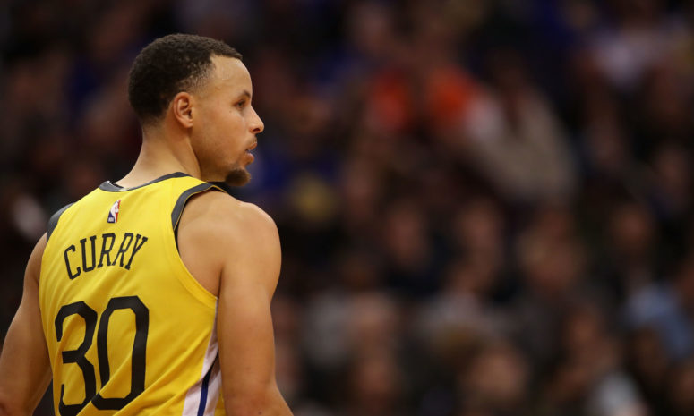

NBA TRENDS by: Nana and Nathaniel
Home
News
Contact
NBA
|Best Shooters in NBA History! |Best Shooters in NBA History! |Best Shooters in NBA History! |Best Shooters in NBA History! |Best Shooters in NBA History! |Best Shooters in NBA History! |Best Shooters in NBA History! |Best Shooters in NBA History! |Best Shooters in NBA History! |Best Shooters in NBA History!
Stephen Curry is the Best 3 Point Shooter in NBA History!

Best Nba 3 Point Shooters of all time!
1. Stephen Curry
2. Klay Thompson
3. Ray Allen
4.Reggie Miller
5. Larry Bird